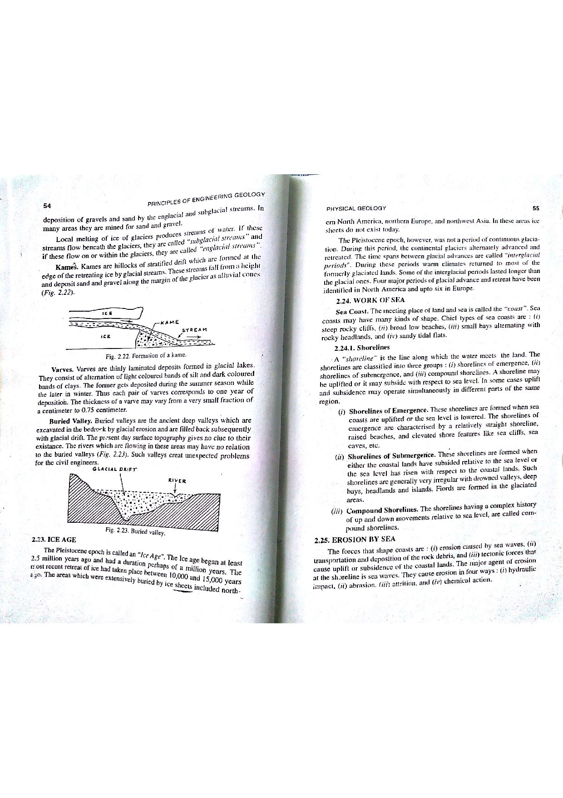

Q146: Aquifer Hydraulics: Pumping Period vs Post-Pumping Residual Drawdown Recovery
In groundwater hydrology, an Aquifer Performance Test (Pumping Test) is the standard field methodology used to quantify the primary hydrodynamic parameters of an aquifer: Transmissivity ($T$) and Storativity ($S$) (Theis, 1935; Todd & Mays, 2005; Fetter, 2001; Bangar, p. 33).
A complete pumping test consists of two distinct, mutually exclusive operational periods:
- The Pumping Period: Water is continuously discharged from a production well at a measured rate $Q$ for a predetermined duration $t_p$. Hydraulic head declines throughout the surrounding formation, establishing a dynamic cone of depression.
- The Recovery Period: The pump is abruptly shut down at time $t = t_p$. Groundwater flows inward from the outer edges of the cone of depression, causing piezometric levels in the well and surrounding piezometers to rise back toward the pre-pumping static equilibrium level.

Parameters Gathered During the Active Pumping Period
While the pump is actively operating ($0 \le t \le t_p$), hydrogeologists gather three fundamental datasets:
- Drawdown ($s$): The instantaneous vertical decline in hydraulic head relative to the initial static water table ($s = h_0 - h$).
- Time-Drawdown Data: A continuous time series recording the progressive deepening of drawdown $s$ against elapsed pumping time $t$ in individual observation wells.
- Distance-Drawdown Data: Simultaneous measurements of drawdown $s$ recorded at the same elapsed time across multiple observation wells located at varying radial distances $r_1, r_2, \dots, r_n$ from the pumping center.

Definition of Residual Drawdown ($s'$)
During the recovery period after pumping has ceased, Residual Drawdown is defined as the difference between the original pre-pumping static water level ($h_0$) and the recovering water level ($h$) at elapsed recovery time $t'$: $$s' = h_0 - h(t') \quad [\text{meters}]$$ Residual drawdown exists and is measured exclusively during the recovery period. It cannot exist during the active pumping period.
Theis Superposition Theorem for Recovery
In 1935, C.V. Theis demonstrated that recovery can be modeled mathematically by applying the Principle of Superposition:
- Assume the pumping well continues to discharge at rate $Q$ indefinitely from $t = 0$.
- At time $t = t_p$ (when the pump is actually shut off), an imaginary recharge well is introduced at the same location, injecting water into the aquifer at an identical rate $+Q$.
The net residual drawdown $s'$ at any elapsed recovery time $t'$ (where total elapsed time from the start of pumping is $t = t_p + t'$) is the algebraic sum of the continuing drawdown minus the recharge buildup:
For sufficiently long pumping and recovery times ($u, u' \le 0.05$), truncating the well function series yields the famous Theis Recovery Formula:
A plot of residual drawdown $s'$ on arithmetic scale versus the dimensionless time ratio $t/t'$ on logarithmic scale forms a straight line whose slope $\Delta s'$ yields Transmissivity ($T$):
In hydrogeological practice, recovery test data are often considered far more reliable and precise than active pumping test data for determining formation transmissivity:
- Absence of Discharge Fluctuations: During pumping, maintaining an exactly constant discharge $Q$ is difficult due to engine speed variations, generator cycling, and falling dynamic water levels. In recovery, $Q = 0$ is absolute and unvarying.
- Elimination of Turbulent Well Losses: In an active pumping well, turbulent frictional head loss across the well screen and gravel pack ($s_w = B Q + C Q^2$) distorts water level readings. During recovery, no water is withdrawn, eliminating turbulent wellbore head loss entirely ($C Q^2 = 0$).
- No Water Cascading or Entrained Air: Pumping water levels are often disrupted by cascading water from perforated casing sections above the pump inlet. Recovery levels rise smoothly under laminar conditions.
Drawdown ($s = h_0 - h$) is the primary dependent physical variable measured throughout the active pumping period of a well. It quantifies the instantaneous head drop induced by groundwater extraction. Because drawdown is intimately and directly related to the pumping period, selecting Option (A) is incorrect.
Time-drawdown data consists of the progressive decline in piezometric head recorded against elapsed pumping time ($t$) from the start of pumping. It forms the empirical basis for the Theis curve-matching and Cooper-Jacob straight-line methods evaluated during the pumping period. Thus, Option (B) is a core pumping-phase parameter.
Option (C) is the single parameter that is NOT related to the pumping period:
- By standard hydrogeological definition (Theis, 1935; Todd & Mays; Fetter), Residual Drawdown ($s'$) is measured exclusively during the recovery period following complete pump shutdown ($t > t_p$).
- It represents the difference between the original pre-pumping static water level and the rising water level during recovery.
- While the pump is running, only active drawdown ($s$) exists. Residual drawdown cannot be observed until the pumping phase has fully terminated.
Therefore, Option (C) is the unambiguous correct choice.
Distance-drawdown data represents simultaneous measurements of drawdown across multiple observation wells located at various radial distances ($r$) from the pumping well at a specific time $t$ during the active pumping period. It is used to plot the cone of depression and calculate transmissivity and storativity via the Cooper-Jacob distance method ($s$ vs $\log r$). Hence, it belongs strictly to the pumping phase.
| Hydraulic Parameter | Test Period | Mathematical Notation | Governing Analytical Relationship | Physical Meaning |
|---|---|---|---|---|
| Active Drawdown | Pumping Phase ($t \le t_p$) | $$s = h_0 - h(t)$$ | $$s = \frac{Q}{4 \pi T} W\left(\frac{r^2 S}{4 T t}\right)$$ | Total decline of piezometric head below static baseline during pumping. |
| Time-Drawdown Data | Pumping Phase ($t \le t_p$) | $$s \text{ vs } t$$ | $$s = \frac{2.303 Q}{4 \pi T} \log_{10}\left(\frac{2.25 T t}{r^2 S}\right)$$ | Chronological progression of head drop in a single observation well. |
| Distance-Drawdown Data | Pumping Phase ($t \le t_p$) | $$s \text{ vs } r$$ | $$s = \frac{2.303 Q}{2 \pi T} \log_{10}\left(\frac{r_0}{r}\right)$$ | Radial profile of the cone of depression across multiple piezometers at fixed $t$. |
| Residual Drawdown | Recovery Phase ONLY ($t > t_p$) | $$s' = h_0 - h(t')$$ | $$s' = \frac{2.303 Q}{4 \pi T} \log_{10}\left(\frac{t}{t'}\right)$$ | Residual unrecovered head drop remaining after pump shutdown at recovery time $t'$. |
A well is pumped at a constant discharge of $Q = 1440\text{ m}^3/\text{day}$ for $t_p = 24\text{ hours}$ and then shut down. Measurements of residual drawdown $s'$ are plotted against $\log_{10}(t/t')$, where $t = t_p + t'$. The straight line fitted through the data reveals a drawdown change per log cycle of $\Delta s' = 0.92\text{ m}$. Calculate the Transmissivity ($T$) of the aquifer in: (a) $\text{m}^2/\text{day}$, and (b) $\text{m}^2/\text{s}$.
1. Theis recovery transmissivity formula: $$T = \frac{2.303 Q}{4 \pi \Delta s'} = \frac{2.303 \times 1440}{4 \times 3.14159 \times 0.92} = \frac{3316.32}{11.561} \approx 286.85\text{ m}^2/\text{day}$$ 2. Convert to $\text{m}^2/\text{s}$: $$T = \frac{286.85\text{ m}^2/\text{day}}{86,400\text{ s/day}} \approx 3.32 \times 10^{-3}\text{ m}^2/\text{s}$$
A confined aquifer has $T = 400\text{ m}^2/\text{day}$. A well is pumped at $Q = 1200\text{ m}^3/\text{day}$ for $t_p = 10\text{ hours}$ ($600\text{ min}$). Calculate the theoretical residual drawdown $s'$ in an observation well after: (a) $t' = 30\text{ minutes}$ of recovery, and (b) $t' = 300\text{ minutes}$ of recovery.
1. Parameter coefficient: $$\frac{2.303 Q}{4 \pi T} = \frac{2.303 \times 1200}{4 \times 3.14159 \times 400} = \frac{2763.6}{5026.55} \approx 0.5498\text{ meters per log cycle}$$ 2. At $t' = 30\text{ min}$, total time $t = 600 + 30 = 630\text{ min}$: $$\frac{t}{t'} = \frac{630}{30} = 21 \implies \log_{10}(21) \approx 1.3222$$ $$s'(30) = 0.5498 \times 1.3222 \approx 0.727\text{ meters}$$ 3. At $t' = 300\text{ min}$, total time $t = 600 + 300 = 900\text{ min}$: $$\frac{t}{t'} = \frac{900}{300} = 3.0 \implies \log_{10}(3.0) \approx 0.4771$$ $$s'(300) = 0.5498 \times 0.4771 \approx 0.262\text{ meters}$$
In an ideal infinite, homogeneous, isotropic confined aquifer, the theoretical straight line of $s'$ vs $\log(t/t')$ extrapolates to zero residual drawdown ($s' = 0$) at precisely $t/t' = 1.0$. Explain what hydrogeologic conditions are indicated if field data extrapolate to: (a) $t/t' > 1.0$ at $s' = 0$, and (b) $t/t' < 1.0$ at $s' = 0$.
1. Case (a) $t/t' > 1.0$ at $s' = 0$: The recovering water level reaches static equilibrium before $t/t' = 1.0$. This signifies that the aquifer received recharge from an external source during the test (e.g., intersection with a recharge boundary such as a perennial river or lake, or downward leakage from an overlying formation).
2. Case (b) $t/t' < 1.0$ at $s' = 0$: The straight line extrapolates to a value of $t/t' < 1.0$, meaning that even after infinite recovery time ($t' \to \infty, t/t' \to 1.0$), some residual drawdown remains unrecovered. This indicates either an impermeable barrier boundary (fault, bedrock pinchout), aquifer depletive overdraft, or that storativity during recovery ($S'$) differs from storativity during pumping ($S$).
During the active pumping period of a test ($Q = 2000\text{ m}^3/\text{day}$, $t = 480\text{ minutes} = 0.333\text{ days}$), simultaneous drawdowns measured in two piezometers are $s_1 = 1.85\text{ m}$ at $r_1 = 20\text{ m}$, and $s_2 = 0.95\text{ m}$ at $r_2 = 80\text{ m}$. Calculate: (a) Aquifer Transmissivity ($T$), and (b) Aquifer Storativity ($S$).
1. Distance-drawdown formula: $$s_1 - s_2 = \frac{2.303 Q}{2 \pi T} \log_{10}\left(\frac{r_2}{r_1}\right)$$ $$1.85 - 0.95 = 0.90\text{ m} = \frac{2.303 \times 2000}{2 \times 3.14159 \times T} \log_{10}\left(\frac{80}{20}\right) = \frac{4606}{6.2832 T} \log_{10}(4)$$ $$0.90 = \frac{733.06}{T} \times 0.60206 = \frac{441.35}{T} \implies T = \frac{441.35}{0.90} \approx 490.4\text{ m}^2/\text{day}$$ 2. Zero-drawdown radius ($r_0$): $$s_1 = \frac{2.303 Q}{2 \pi T} \log_{10}\left(\frac{r_0}{r_1}\right) \implies 1.85 = \frac{4606}{3081.2} \log_{10}\left(\frac{r_0}{20}\right) = 1.4948 \log_{10}\left(\frac{r_0}{20}\right)$$ $$\log_{10}\left(\frac{r_0}{20}\right) = \frac{1.85}{1.4948} = 1.2376 \implies \frac{r_0}{20} = 10^{1.2376} \approx 17.28 \implies r_0 \approx 345.6\text{ m}$$ 3. Storativity: $$S = \frac{2.25 T t}{r_0^2} = \frac{2.25 \times 490.4 \times 0.333}{(345.6)^2} = \frac{367.43}{119,439} \approx 3.08 \times 10^{-3}$$
In a pumping well of casing radius $r_c = 0.15\text{ m}$, water level recovery is initially dominated by wellbore storage (casing refilling) rather than aquifer inflow. The critical time after which wellbore storage effects become negligible is given by Papadopulos and Cooper (1967) as $t'_c \ge \frac{25 r_c^2}{T}$. For $T = 150\text{ m}^2/\text{day}$, calculate $t'_c$ in seconds.
1. Calculate $t'_c$ in days: $$t'_c = \frac{25 \times (0.15)^2}{150} = \frac{25 \times 0.0225}{150} = \frac{0.5625}{150} = 0.00375\text{ days}$$ 2. Convert to minutes and seconds: $$t'_c = 0.00375\text{ days} \times 1440\text{ min/day} = 5.4\text{ minutes} = 324\text{ seconds}$$ Recovery data collected prior to $5.4\text{ minutes}$ reflect water filling the open casing rather than true Darcy flow through the aquifer formation.
During pumping at $Q = 1500\text{ m}^3/\text{day}$, the total drawdown measured inside the pumped well is $s_w = 6.80\text{ m}$. Transmissivity computed from recovery analysis is $T = 320\text{ m}^2/\text{day}$, which predicts a theoretical laminar aquifer drawdown of $s_{\text{formation}} = 4.25\text{ m}$. (a) Calculate the well loss component ($s_{\text{well loss}}$). (b) Determine the Well Efficiency ($E_w$).
1. Well loss due to screen entrance turbulence and gravel pack head loss: $$s_{\text{well loss}} = s_w - s_{\text{formation}} = 6.80\text{ m} - 4.25\text{ m} = 2.55\text{ meters}$$ 2. Well Efficiency: $$E_w = \left(\frac{s_{\text{formation}}}{s_w}\right) \times 100\% = \left(\frac{4.25}{6.80}\right) \times 100\% \approx 62.5\%$$ Recovery testing uniquely isolated the true aquifer transmissivity without distortion from the $2.55\text{ m}$ well loss.
A well is pumped in two consecutive steps before shutdown: Step 1 at $Q_1 = 800\text{ m}^3/\text{day}$ for duration $t_1 = 4\text{ hours}$ ($240\text{ min}$), followed immediately by Step 2 at $Q_2 = 1400\text{ m}^3/\text{day}$ for duration $t_2 = 4\text{ hours}$ ($240\text{ min}$, total pumping $t_p = 480\text{ min}$). Formulate the generalized superposition recovery equation for residual drawdown $s'$ at recovery time $t'$.
1. By generalized multi-rate superposition: $$s'(t') = \frac{2.303}{4 \pi T} \left[ Q_1 \log_{10}\left(\frac{t_1 + t_2 + t'}{t_2 + t'}\right) + Q_2 \log_{10}\left(\frac{t_2 + t'}{t'}\right) \right]$$ 2. For $t' = 60\text{ min}$: $$s'(60) = \frac{2.303}{4 \pi T} \left[ 800 \log_{10}\left(\frac{240 + 240 + 60}{240 + 60}\right) + 1400 \log_{10}\left(\frac{240 + 60}{60}\right) \right]$$ $$s'(60) = \frac{2.303}{4 \pi T} \left[ 800 \log_{10}\left(\frac{540}{300}\right) + 1400 \log_{10}(5) \right] = \frac{2.303}{4 \pi T} [ 800(0.2553) + 1400(0.6990) ]$$ $$s'(60) = \frac{2.303}{4 \pi T} [ 204.24 + 978.60 ] = \frac{2.303 \times 1182.84}{4 \pi T}$$
A field pump test experiences an unmonitored generator throttle surge at $t = 180\text{ minutes}$ that increases discharge from $1000\text{ m}^3/\text{day}$ to $1150\text{ m}^3/\text{day}$. Explain why this generator failure invalidates Cooper-Jacob pumping curve analysis but leaves subsequent post-shutdown Theis recovery analysis unaffected if the final rate is recorded.
1. Pumping Period Invalidation: Cooper-Jacob and Theis type-curve methods strictly assume a constant discharge $Q$. The $15\%$ jump in $Q$ creates a secondary pressure wave, causing drawdowns to deviate unpredictably from the standard logarithmic curve and producing erroneous values for $T$ and $S$.
2. Recovery Period Robustness: Once the pump is completely stopped, the discharge is exactly $Q = 0.000\text{ m}^3/\text{day}$ with zero fluctuations. The subsequent recovery curve converges to the late-time average discharge, allowing reliable evaluation of formation transmissivity.